nome_do_projeto/
- .Rprofile # códigos para rodar assim que abrir o projeto
- R/ # Código R, organizado com a-carrega.R, b-prepara bd.R, c-vis.R, d-modela, ...
- RData/ # Dados em formato .RData
- csv/ # Dados em .csv
- png/ # gráficos em PNG
- nome_do_projeto.Rproj2 RStudio
O RStudio é sem dúvidas o mais completo ambiente de desenvolvimento para programação em R. Descubra aqui as funcionalidades do RStudio que nos permitem escrever códigos e analisar resultados de forma muito mais eficiente.
2.1 Telas
Ao abrir o RStudio, você verá 4 quadrantes. Observe a figura abaixo.
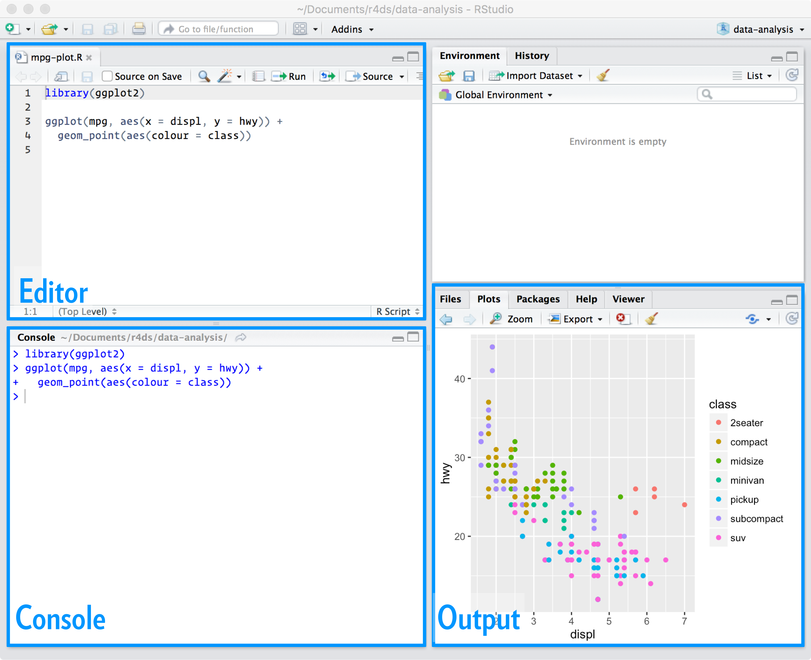
Esses quadrantes representam o editor, o console, o environment e o output. Eles vêm nesta ordem, mas você pode organizá-los da forma que preferir acessando a seção Pane Layout da opção Global options... no menu Tools.
O editor e o console são os dois principais painéis do RStudio. Passaremos a maior parte do tempo neles.
- Editor/Scripts: é onde escrevemos nossos códigos. Repare que o RStudio colore algumas palavras e símbolos para facilitar a leitura do código.
- Console: é onde rodamos o código e recebemos as saídas. O R vive aqui!
Os demais painéis são auxiliares. O objetivo deles é facilitar pequenas tarefas que fazem parte tanto da programação quanto da análise de dados, como olhar a documentação de funções, analisar os objetos criados em uma sessão do R, procurar e organizar os arquivos que compõem a nossa análise, armazenar e analisar os gráficos criados e muito mais.
- Environment: painel com todos os objetos criados na sessão.
- History: painel com um histórico dos comandos rodados.
- Files: mostra os arquivos no diretório de trabalho. É possível navegar entre diretórios.
- Plots: painel onde os gráficos serão apresentados.
- Packages: apresenta todos os pacotes instalados e carregados.
- Help: janela onde a documentação das funções serão apresentadas.
- Viewer: painel onde relatórios e dashboards serão apresentados.
2.2 Atalhos
Conhecer os atalhos do teclado ajuda bastante quando estamos programando no RStudio. Veja os principais:
- CTRL+ENTER: roda a(s) linha(s) selecionada(s) no script. O atalho mais utilizado.
- ALT+-: cria no script um sinal de atribuição (<-). Você o usará o tempo todo.
- CTRL+SHIFT+M: (%>%) operador pipe. Guarde esse atalho, você o usará bastante.
- CTRL+1: altera cursor para o script.
- CTRL+2: altera cursor para o console.
- CTRL+ALT+I: cria um chunk no R Markdown.
- CTRL+SHIFT+K: compila um arquivo no R Markdown.
- ALT+SHIFT+K: janela com todos os atalhos disponíveis.
No MacBook, os atalhos geralmente são os mesmos, substituindo o CTRL por command e o ALT por option.
2.3 Projetos
Uma funcionalidade muito importante do RStudio é a possibilidade de criar projetos.
Um projeto nada mais é do que uma pasta no seu computador. Nessa pasta, estarão todos os arquivos que você usará ou criará na sua análise.
A principal razão de utilizarmos projetos é organização. Com eles, fica muito mais fácil importar bases de dados para dentro do R, criar análises reprodutíveis e compartilhar o nosso trabalho.
Você que está começando agora no R, já se habitue a criar um novo projeto para cada nova análise que for fazer.
Para criar um projeto, clique em New Project... no Menu File. Na caixa de diálogo que aparecerá, clique em New Directory para criar o projeto em uma nova pasta ou Existing Directory para criar em uma pasta existente.
Se você tiver o Git instalado, você também pode usar projetos para conectar com repositórios do Github e outras plataformas de desenvolvimento. Para isso, basta clicar em Version Control.
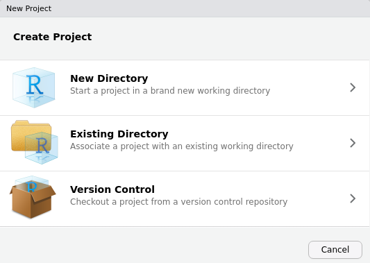
Criando um projeto, o RStudio criará na pasta escolhida um arquivo nome-do-projeto.Rproj. Você pode usar esse arquivo para iniciar o RStudio já com o respectivo projeto aberto.
Quando um projeto estiver aberto no RStudio, o seu nome aparecerá no canto superior direito da tela. Na aba Files, aparecerão todos os arquivos contidos no projeto.
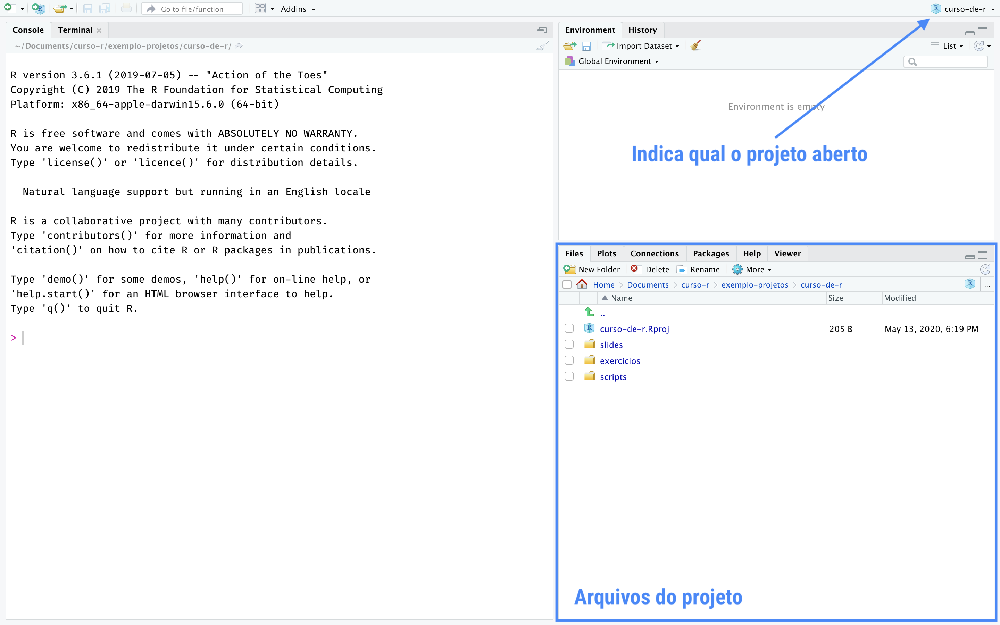
Você pode criar livremente novas pastas dentro da pasta do projeto. Por padrão, o R sempre começará a procurar arquivos na pasta raiz do projeto (é a pasta que contem o nome-do-projeto.Rproj).
Uma maneira fácil de navegar entre projetos é utilizar o menu disponibilizado quando clicamos no nome do projeto. Veja a figura a seguir.
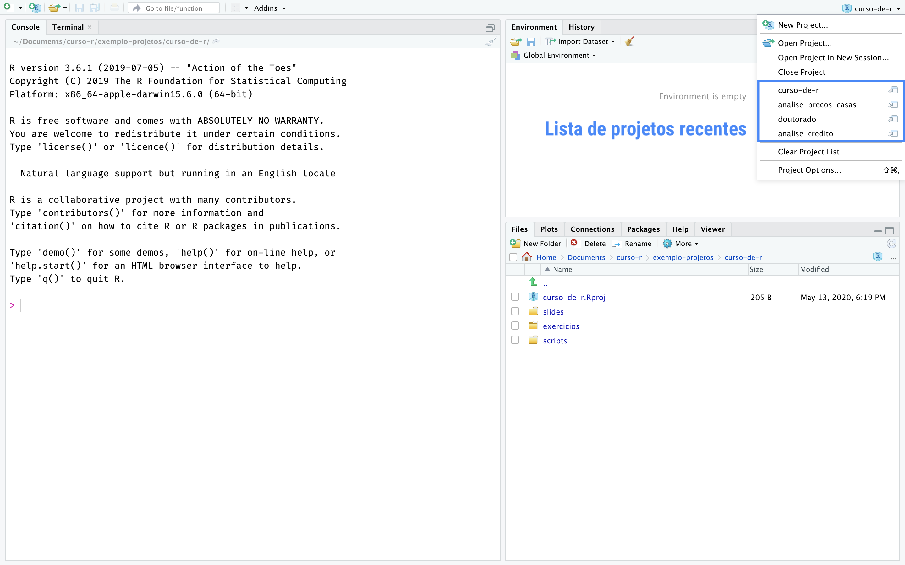
Nesse menu, além de podermos criar novos projetos ou abrir projetos já existentes, também temos um acesso rápido a projetos abertos recentemente. Basta clicar em qualquer um deles para trocar de projeto, isto é, deixar de trabalhar em uma análise e começar a trabalhar em outra.
A seguir, apresentamos algumas estruturas de organização de projetos no RStudio.
Estrutura 1. Por extensão de arquivo.
Estrutura 2. Típico projeto de análise estatística.
nome_do_projeto/
- README.Rmd # Descrição do pacote
- set-up.R # Pacotes etc
- R/ # Código R, organizado com 0-load.R, 1-tidy.R, 2-vis.R, ...
- data/ # Dados (estruturados ou não)
- figures/ # gráficos (pode ficar dentro de output/)
- output/ # Relatórios em .Rmd, .tex etc
- nome_do_projeto.RprojEstrutura 3. Pacote do R.
nome_do_projeto/
- README.md # Descrição do pacote
- DESCRIPTION # Metadados estruturados do pacote e dependências
- NAMESPACE # importações e exportações do pacote
- vignettes/ # Relatórios em .Rmd
- R/ # Funções do R
- data/ # Dados estruturados (tidy data)
- data-raw/ # Dados não estruturados e arqs 0-load.R, 1-tidy.R, 2-vis.R, ...
- nome_do_projeto.Rproj2.4 Git e versionamento
O RStudio possui funcionalidades para quem trabalha com o programa Git para versionar arquivos.
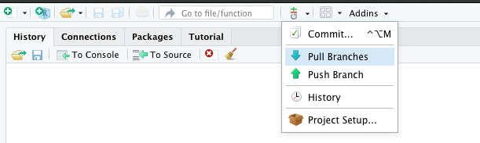
Além disso, quando você inicia o Git na pasta raiz de um projeto, o RStudio criará uma nova abinha chamada Git, onde você pode confirir os arquivos modificados que estão à espera de um commit.
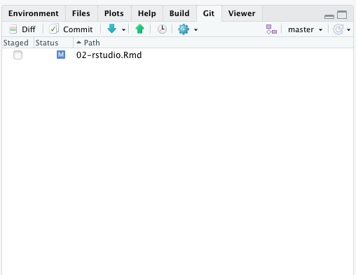
Para saber mais sobre Git e versionamento de arquivos, leia esse excelente capítulo do Zen do R.
2.5 Cheatsheets
O RStudio tem à disposição algumas folhas de cola, as cheatsheets. Elas trazem um resumão de como utilizar diversos pacotes e até o próprio RStudio.
Para acessá-las, basta clicar no menu Help e então em Cheatsheets.
Outra forma de acessá-las é através do site da RStudio, onde existem muitas opções de cheatsheets, incluindo algumas traduzidas para o Português.
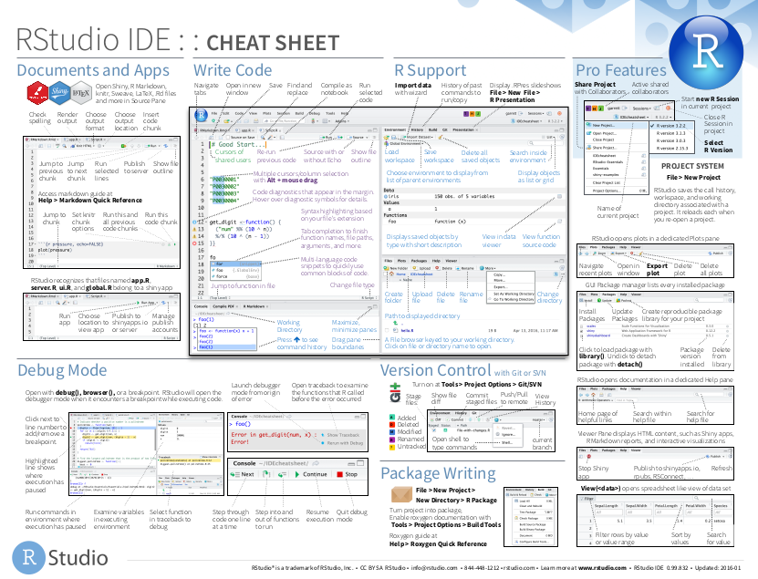
2.6 Addins
Addins são cápsulas de código R que podem ser executados interativamente a partir do menu Addins.
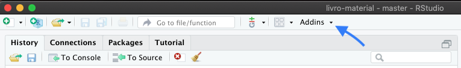
Eles servem para fazer diversos tipos de tarefas, como identar seu código, ajudar nas tarefas de copiar e colar, insirir códigos no seu script e muito mais.
Os addins são criados pelos pacotes que instalamos, então cada pacote vai nos disponibizar addins que facilitam algum tipo de tarefa.
Veja aqui um exemplo de um addin que formata um código e aqui um addin que filtra uma base.


O pacote {CursoR} da Curso-R, por exemplo, tem um addin que auxilia quem faz nossos cursos a atualizar o material de cada aula.
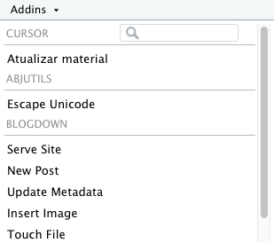
2.7 Snippets
Snippets são atalhos que podemos criar para gerar pedaços rotineiros de código.
O RStudio já vem com vários snippets criados. Você pode visualizar os snippts existentes ou criar novos acessando Tools > Global Options... > Code > Editting > Snippets > Edit snippets.
No arquivo de texto aberto, basta seguir o padrão dos snippets já existentes para criar novos. Você também pode editar os snippets padrão do RStudio.
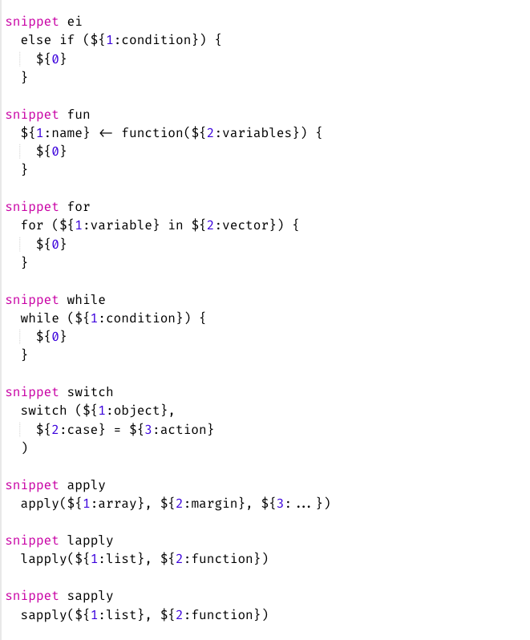
Cada snippet terá um nome, que deverá ser utilizado no script para ativar o código guardado por trás.
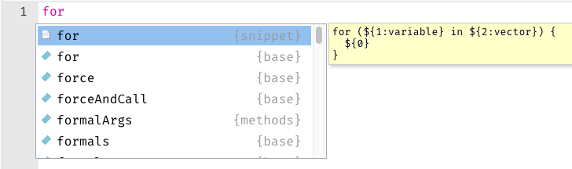
Basta escrever o nome, apertar a teclar TAB e voilà.
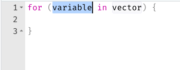